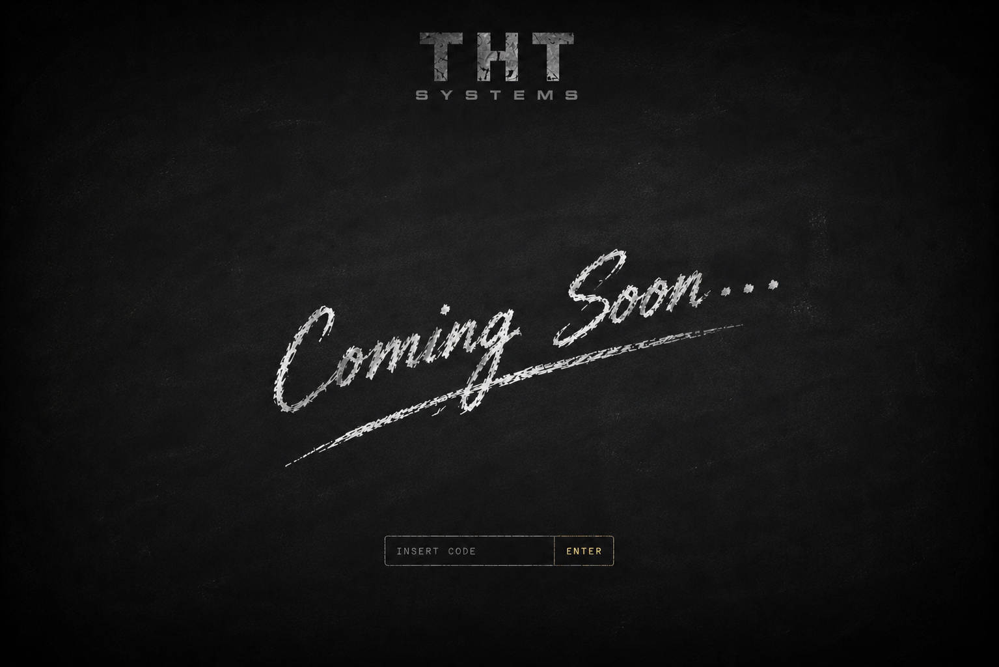

v2026.2250 · b15c8eb · Powered by THT Systems
▤ i prodotti
⚗ pagina demo
🔒 accesso riservato
Per veri imprenditori
Controllo aziendale
Segretezza assoluta
Il primo passo
IT
|
EN
|
ES
|
FR
© 2026 THT — The Hidden Truths
·
P. IVA ⟨da inserire⟩
·
Privacy
·
Cookie
·
Note legali
·
Contatti
v2026.2250 · b15c8eb · Powered by THT Systems